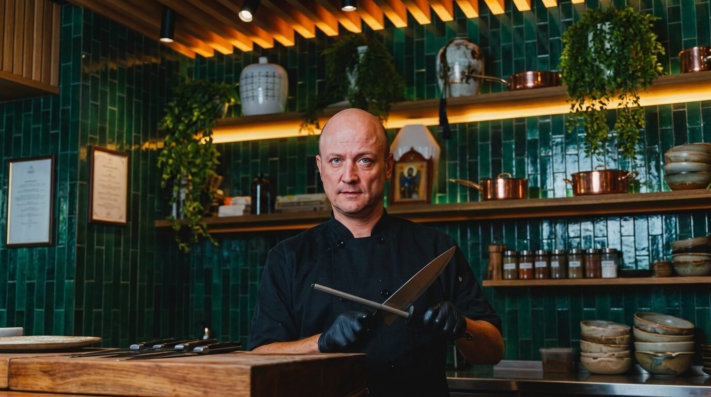
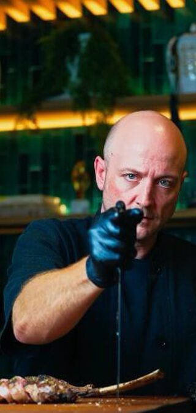
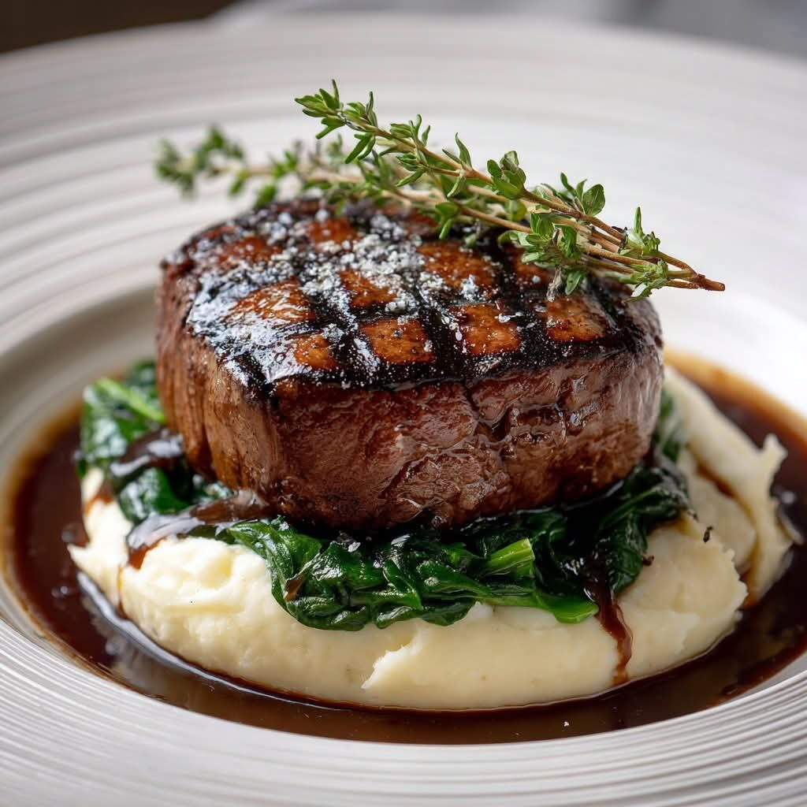
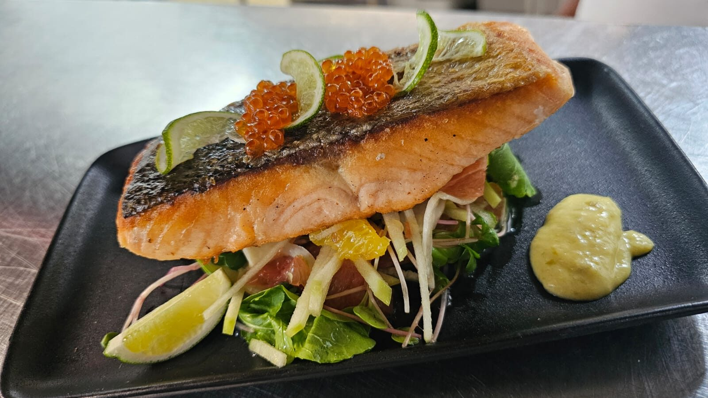
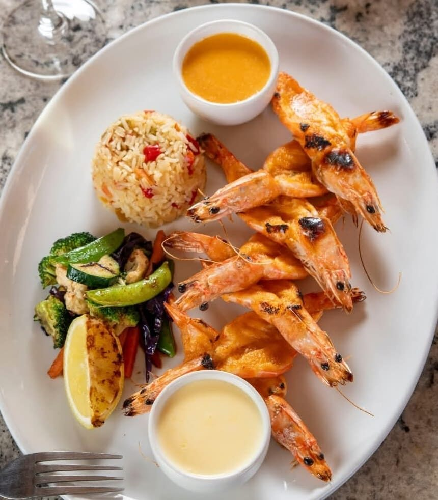
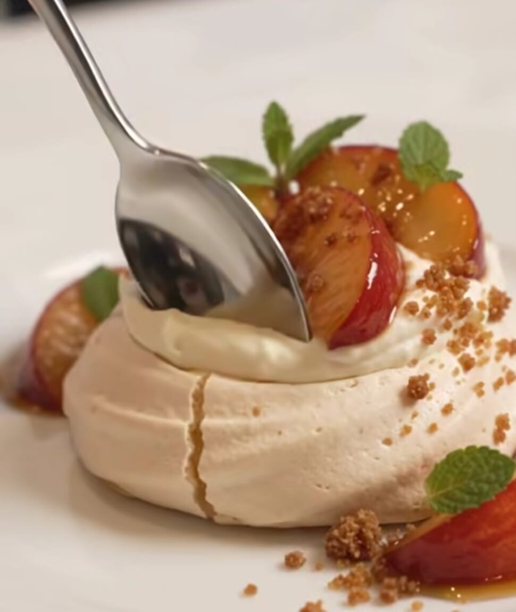

Cooking & Menu Planning
Menu creation · À la carte · Fine dining

The Art of the Plate
I’m a Head Chef with over 20 years’ experience in hotel, restaurant and private kitchens, including the Saxon Hotel, Mount Rochelle and Steyn City.
I enjoy being hands-on, but I also know what it takes to keep a kitchen running well. I’ve led teams of up to 25, trained junior chefs and Sous Chefs, and managed food budgets, costing, staff rosters and kitchen reporting.
I take pride in good food, a well-organised kitchen and a team that works together, whether I’m preparing a family dinner or working through a busy hotel service.

Keep learning. Keep creating. Keep growing.
Flavour, consistency and attention to detail guide the work, from preparation to service. So does the paperwork that keeps a kitchen honest.
Menu creation · À la carte · Fine dining
Teams of up to 25 · Staff training · Rosters
Food budgets · Costing · Stock & waste
Custom menus · Dietary needs · Private functions
Functions · Weddings · Conferences
Food quality · Hygiene · Kitchen organisation

Fillet, mash, spinach & jusWorking across the kitchens at Blair Atholl Golf Estate, Lanseria and Number 2 Golf Estate: planning menus, running daily service and keeping food quality consistent at both sites. NR Cuisine is associated with restaurateurs Naldo and Ryan Goncalves, founders of the Pigalle Restaurant Group, Villa Mora and NV80.
Responsibilities

Crispy-skin salmon, roe & limeMore than six years as Head Chef at the private residence of Mr Douw Steyn, cooking for the family, visiting guests and office staff. The role called for discretion, flexibility and attention to what each guest liked, from everyday family meals to formal dinners and special occasions, including hosting guests at Shambala Private Game Farm.
What the Main House table called for
Menus created around individual tastes and dietary requirements. A personalised dining experience in a private luxury setting, with the kitchen stock, ordering, hygiene and quality to match.

Grilled prawns, rice & two saucesManaging the hot section and supervising kitchen teams, preparing meals for at least 120 guests daily across à la carte dining and functions, where planning ahead and working well as a team made all the difference during busy service.
Progression

Pavlova, roasted stone fruitAt Mount Rochelle Hotel’s Country Kitchen (Sous Chef, 2007–2012), running the kitchen day to day across hot and cold sections, with stock takes, prep lists and daily menu changes. Before that, at Chamonix Restaurant, Chaîne des Rôtisseurs (Junior Sous Chef, 2003–2006), managing the hot section with a focus on meats and sauces.
Service scale · guests per sitting
Mount Rochelle
Mount Rochelle, assisting
Trained at Cape Technikon, Professional Cookery (2002–2003). Paarl College, N3 (2001).
FOOD IS AN OPPORTUNITY TO CREATE SOMETHING PEOPLE REMEMBER.Alex Rozsnyai · Head Chef
Head Chef and culinary operations roles, private dining, and event catering. Based in Johannesburg, South Africa.
Professional references available on request.
Cape Technikon, Professional Cookery, 2002–2003
Paarl College, N3, 2001
English & Afrikaans
Driver’s licence Code 8
Own vehicle